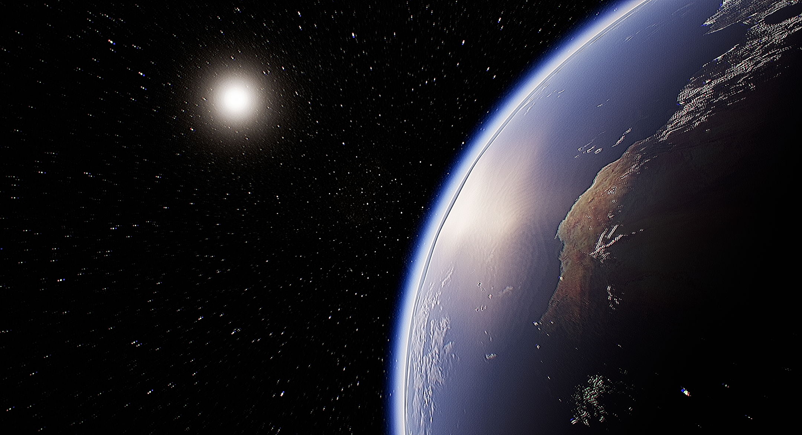
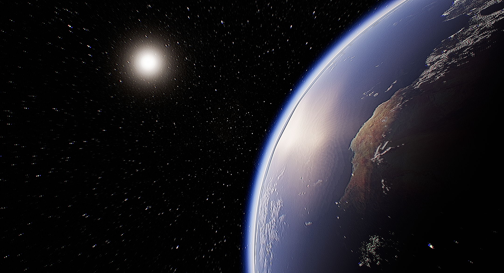
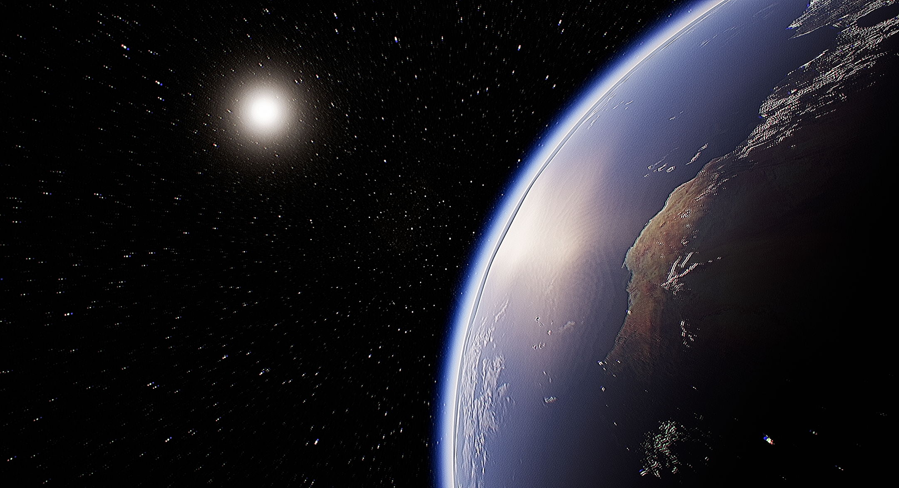
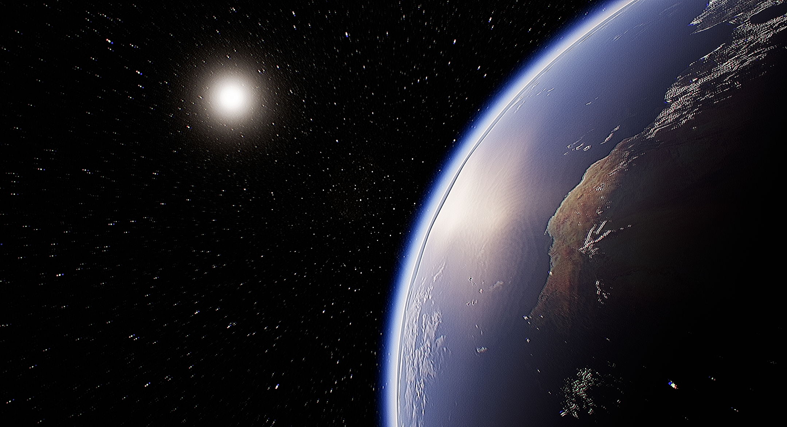

 

| STORY | GAMEPLAY | FPS | WEAPONS |
|---|---|---|---|
| Explore the Solar system to uncover its hidden secrets | Complete a variety of combat missions given to you by mission control | Survive the extreme enviornments of alien worlds, whilst playing with mil-sim mechanics | Use a variety of near-futuristic weapons to slay your enemies |
THE SOLAR SYSTEM
HIDDEN SECRETS
USING MIL-SIM MECHANICS
NOTHING IS FINAL. Keep in mind all information shared is just where my mind is at right now, and can definitely (and probably will) change before the game comes out. Also I know this website is pretty bad on mobile devices, I'll fix that eventually.
9.29.24
After some time away from making the actual game, the website is finally ready for its own public domain. I plan to update this, but I might forget sometimes. This is really just a side project that will evolve alongside the game itself. The next showcase, which has been 2 months in the making, will probably come out sometime next month, and will focus around refined FPS combat.
The Last Pioneers is a singleplayer First Person Shooter. This FPS includes mil-sim and realistic mechanics. You travel the solar system to attack and complete a variety of combat missions. Some on foot, others in orbit.
There are a variety of different core gamemodes that each mission is based off. 2 of them consist of the First person combat, the other one consists fighting enemy comantants in starship combat. Every mission has a 50% chance of applying a "Mission Modifier". These mission modifers shake up the core gamemode, helping replayablity.
At the beginning of each mission, the player chooses their class. Commandos are brute-like exomechs that are able to use the "Heavy" type of weapon. Assassins are stealthy builds that use a range of snipers, revolvers, and pistols. Cybersoldiers can use a range of hacks. These hacks can be used to quickly kill a large ammount of enemies at once.
It takes place in the year 2044, 10 years after Soviet rouge AI took control of nuclear weapons, and destroyed Earth. Despite this, war continues among the 2 global powers. The remaining humans are forced to live on space colonies, or join the military. You play as a soldier in the United States Space Force, and are given combat objectives that allow you to explore various parts of the solar system to fight the communist threat.
The entire game is played on seperate maps, or landing zones around the solar system. I'm still not sure how many, and which exactly, but moons and planets will be in the game, and as of right now, I plan to include Venus, Earth, The Moon, Mars, Europa, and Titan. Each one of these planets/moons will have 2-3 maps on it, each with their own custom mission.
I use Unreal Engine 5.4 and Blueprint programming to create the game (No C++ for now). As well as Blender for 3D models and animations, Audacity for sound design, and GIMP for photoshopping different things. I try to make as much as I can on my own, but I do use a few free and paid assets.
If you are interested in the game, consider joining my discord or just check the website every once in a while. If you are interested in seeing what I have already made, check out my devlog or builds.